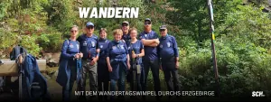
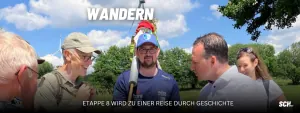
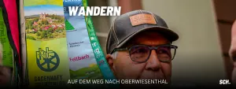
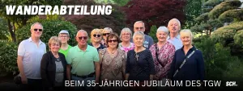
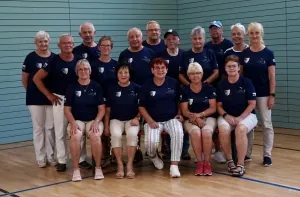

Liebe Wanderfreunde, liebe Besucher,
herzlich willkommen bei der Abteilung Wandern des 1. SC 1911 Heiligenstadt e.V.
Seit unserer Gründung im Juli 2021 haben wir uns zu einer lebendigen Gemeinschaft von Wanderbegeisterten entwickelt. Dank unseres strukturierten Wanderplans und unserer gut organisierten Wanderrouten konnten wir immer mehr Menschen für das Wandern begeistern und in unserem Verein begrüßen.
Unsere Wanderungen bieten für jeden Geschmack und jedes Fitnesslevel etwas. Ob Sie die Natur bei einem gemütlichen Spaziergang genießen möchten oder eine anspruchsvolle Bergtour bevorzugen, wir haben das passende Angebot für Sie.
Hier sind einige unserer beliebtesten Wanderungen:
Der „Ibergklassiker“ führt durch malerische Landschaften und bietet atemberaubende Ausblicke auf die umliegenden Landschaft. Diese Wanderung ist auch für weniger geübte Wanderer geeignet.
Und wenn Sie mit Ihrer Familie oder Freunden eine entspannende Wanderung unternehmen möchten, wir bieten über das Jahr verteilt an jeden letzten Samstag im Monat eine geführte Wanderung an. Diese Wanderung führt durch dichte Wälder und ist auch für Kinder bestens geeignet.
Wir möchten Sie ermutigen, sich unserer Wandergemeinschaft anzuschließen und Teil unserer wachsenden Gemeinschaft zu werden. Wandern ist nicht nur eine großartige Möglichkeit, körperlich fit zu bleiben, sondern bietet auch die Chance, die Natur zu erleben und neue Freundschaften zu schließen. Nutz unseren Wanderplan und erfahrt mehr über unsere Aktivitäten und Wanderungen.
Wir freuen uns darauf, Sie bei einer unserer nächsten Touren begrüßen zu dürfen!
Hierzu haben wir unseren aktuellen Wanderplan für das Jahr 2027 erstellt.
Wanderplan 2027
Meist am letzten Samstag im MonatStart 10:00 UhrTreff 9:30 Uhr Parkplatz hinter der Volksbank, obere Wilhelmstraße
Wanderplan 2027 als PDF herunterladen (2 MB)
Januar bis Juni
- TOP-Wanderweg „Erlebnis Iberg“Treff: Wanderparkplatz oberhalb der ÄgidienstraßeStrecke: große Runde 12,7 km, kleine Runde über den Kurfürstenstein 5 kmFührung: mit K. Mund und M. Weinrich
- TOP-Wanderweg Warteberg, MärzenbecherwanderungTreff: Parkplatz Neun BrunnenStrecke: große Runde 15 km, kleine Runde 5 kmFührung: mit K. Mund und J. Jarosz
- Wanderung rund um BodensteinTreff: Parkplatz Alternativer Bärenpark WorbisStrecke: ca. 9,8 kmFührung: mit M. Weinrich
- KirschblütenwanderungTreff: Bürgerhaus Kleinallmerode, Ledergasse 1Strecke: 4 / 7,5 / 11 / 13,5 km
- 35. Thüringer Wandertag am Dolmar-MeiningenTreff: nach AbspracheFührung: örtliche Wanderführer
- Eichsfelder Wandertag: Sternenwanderung von Leinefelde, Heiligenstadt und DingelstädtTreff: nach AbspracheFührung: örtliche Wanderführer
- Jubiläumswanderung „30 Jahre Abteilung Wandern“ in Bernterode/WipperTreff: 8:00 Uhr in Heiligenstadt, Festplatz am Sportplatz BernterodeStrecke: 5 / 7 / 9 / 12 km
Juli bis Dezember
- Mohnblüte in Germerode, Geo-Naturpark Frau-Holle-LandTreff: Meißner-Germerode, Neuer Weg 10Strecke: unterschiedliche Längen
- Familienwandertag Effelder (Start 8:30–10:30 Uhr)Treff: 8:00 Uhr in Heiligenstadt, Sportplatz EffelderStrecke: 5 / 7 / 9 / 12 km
- Grenzenloses Wandern rund um Gerbershausen, Orte im ehemaligen SperrgebietTreff: Ortsmitte Gerbershausen, am KriegerdenkmalStrecke: 10 kmFührung: mit W. Jennebach
- Wanderung am Grünen Band, BischhagenTreff: Sportplatz BischhagenStrecke: 8 kmFührung: mit W. John
- Rund um LutterTreff: Parkplatz am Sportplatz LutterStrecke: 8 kmFührung: mit M. Kasprzok und V. Bellin
- Gobertwanderung mit Einkehr an der AntennenstationTreff: Feuerwehrhaus VolkerodeStrecke: ca. 10 km
Außerplanmäßige Wanderungen
- MDR-Osterspaziergang
- Tag des Wanderns am
- Wanderung auf dem Schneekopf
Kurzfristige Änderungen sind möglich.
Fragen zum Wanderplan? Das Wander-Orga-Team hilft gern
- Manfred Weinrich0170-1982206
- Manuela Gutbier0172-5428961
- Johannes Jarosz0152-52737085
- Petra Neumann0176-78417918
- Karin Weber0176-81659334
- Wolfgang John0160-91467875
- Jana Bauer0172-1798241
- Martina Kasprzok0151-25912041
Wandern Sie mit uns – wir laden Sie herzlich ein!
News der Abteilung

Mit dem Wandertagswimpel durchs Erzgebirge
Etappe 8 wird zu einer Reise durch die Geschichte Wimpelwanderung erreicht nächsten Meilenstein
Auf dem Weg nach Oberwiesenthal Wimpelstab wird zum Staffelstab Wanderabteilung blickt großen Ereignissen entgegen
Wanderabteilung beim 35-jährigen Jubiläum des TGW Ein bewegtes Wanderjahr 2025 122. Deutscher Wandertag 19. bis 22. September 2024
Ein Dankeschön an alle Wanderer 32. Thüringer Wandertag in Kammerforst Wanderausflug zum Tag des Wanderns 2024 31. Thüringer Wandertag in IlfeldWeitere Informationen
In der Geschäftsstelle des 1.SC 1911 Heiligenstadt e.V
Leineberg 2
37308 Heilbad Heiligenstadt
Telefon: 03606/612206
zu den üblichen Geschäftszeiten:
jeweils am Dienstag oder Donnerstag
von 17.00 Uhr bis 19.00 Uhr
Ansprechpartner:
Sportfreund Uwe Meinold bzw. der Sportfreund Manfred Weinrich.
Der Verein freut sich über Ihr Interesse!